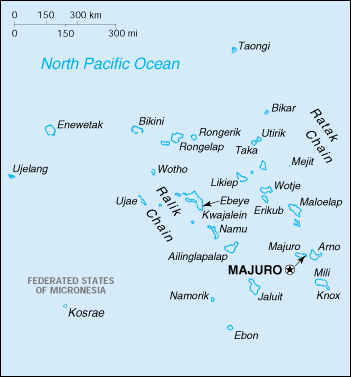

{kind=link}


| Marshall Islands |
|
|  | |
| Introduction |
Background: After almost four decades under US administration as the easternmost part of the UN Trust Territory of the Pacific Islands, the Marshall Islands attained independence in 1986 under a Compact of Free Association. Compensation claims continue as a result of US nuclear testing on some of the islands between 1947 and 1962.
| Geography |
Location: Oceania, group of atolls and reefs in the North Pacific Ocean, about one-half of the way from Hawaii to Papua New Guinea
Geographic coordinates: 9 00 N, 168 00 E
Map references: Oceania
Area:
total:
181.3 sq km
land:
181.3 sq km
water:
0 sq km
note:
includes the atolls of Bikini, Enewetak, and Kwajalein
Area - comparative: about the size of Washington, DC
Land boundaries: 0 km
Coastline: 370.4 km
Maritime claims:
contiguous zone:
24 nm
exclusive economic zone:
200 nm
territorial sea:
12 nm
Climate: wet season from May to November; hot and humid; islands border typhoon belt
Terrain: low coral limestone and sand islands
Elevation extremes:
lowest point:
Pacific Ocean 0 m
highest point:
unnamed location on Likiep 10 m
Natural resources: phosphate deposits, marine products, deep seabed minerals
Land use:
arable land:
0%
permanent crops:
60%
permanent pastures:
0%
forests and woodland:
0%
other:
40%
Irrigated land: NA sq km
Natural hazards: occasional typhoons
Environment - current issues: inadequate supplies of potable water
Environment - international agreements:
party to:
Biodiversity, Climate Change, Desertification, Law of the Sea, Ozone Layer Protection, Ship Pollution
signed, but not ratified:
Climate Change-Kyoto Protocol
Geography - note: two archipelagic island chains of 30 atolls and 1,152 islands; Bikini and Enewetak are former US nuclear test sites; Kwajalein, the famous World War II battleground, is now used as a US missile test range
| People |
Population: 68,126 (July 2000 est.)
Age structure:
0-14 years:
50% (male 17,204; female 16,521)
15-64 years:
48% (male 16,826; female 16,111)
65 years and over:
2% (male 693; female 771) (2000 est.)
Population growth rate: 3.88% (2000 est.)
Birth rate: 45.17 births/1,000 population (2000 est.)
Death rate: 6.4 deaths/1,000 population (2000 est.)
Net migration rate: 0 migrant(s)/1,000 population (2000 est.)
Sex ratio:
at birth:
1.05 male(s)/female
under 15 years:
1.04 male(s)/female
15-64 years:
1.04 male(s)/female
65 years and over:
0.9 male(s)/female
total population:
1.04 male(s)/female (2000 est.)
Infant mortality rate: 40.95 deaths/1,000 live births (2000 est.)
Life expectancy at birth:
total population:
65.5 years
male:
63.72 years
female:
67.36 years (2000 est.)
Total fertility rate: 6.61 children born/woman (2000 est.)
Nationality:
noun:
Marshallese (singular and plural)
adjective:
Marshallese
Ethnic groups: Micronesian
Religions: Christian (mostly Protestant)
Languages: English (universally spoken and is the official language), two major Marshallese dialects from the Malayo-Polynesian family, Japanese
Literacy:
definition:
age 15 and over can read and write
total population:
93%
male:
100%
female:
88% (1980 est.)
| Government |
Country name:
conventional long form:
Republic of the Marshall Islands
conventional short form:
Marshall Islands
former:
Marshall Islands District (Trust Territory of the Pacific Islands)
Data code: RM
Government type: constitutional government in free association with the US; the Compact of Free Association entered into force 21 October 1986
Capital: Majuro
Administrative divisions: 33 municipalities; Ailinginae, Ailinglaplap, Ailuk, Arno, Aur, Bikar, Bikini, Bokak, Ebon, Enewetak, Erikub, Jabat, Jaluit, Jemo, Kili, Kwajalein, Lae, Lib, Likiep, Majuro, Maloelap, Mejit, Mili, Namorik, Namu, Rongelap, Rongrik, Toke, Ujae, Ujelang, Utirik, Wotho, Wotje
Independence: 21 October 1986 (from the US-administered UN trusteeship)
National holiday: Proclamation of the Republic of the Marshall Islands, 1 May (1979)
Constitution: 1 May 1979
Legal system: based on adapted Trust Territory laws, acts of the legislature, municipal, common, and customary laws
Suffrage: 18 years of age; universal
Executive branch:
chief of state:
President Kessai Hesa NOTE (since 3 January 2000); note - the president is both the chief of state and head of government
head of government:
President Kessai Hesa NOTE (since 3 January 2000); note - the president is both the chief of state and head of government
cabinet:
Cabinet selected by the president from among the members of Parliament
elections:
president elected by Parliament from among its own members for a four-year term; election last held 15 November 1999 (next to be held NA November 2003)
election results:
Kessai Hesa NOTE elected president; percent of Parliament vote - 100%
Legislative branch:
unicameral Parliament or Nitijela (33 seats; members elected by popular vote to serve four-year terms)
elections:
last held NA November 1999 (next to be held NA November 2003)
election results:
percent of vote by party - NA; seats by party - NA
note:
the Council of Chiefs is a 12-member body that advises on matters affecting customary law and practice
Judicial branch: Supreme Court; High Court
Political parties and leaders: traditionally there have been no formally organized political parties; what has existed more closely resembles factions or interest groups because they do not have party headquarters, formal platforms, or party structures; the following two "groupings" have competed in legislative balloting in recent years - Kabua Party [Imata KABUA] and United Democratic Party or UDP [Litokwa TOMLING]
International organization participation: AsDB, ESCAP, G-77, IAEA, IBRD, ICAO, IDA, IFC, IMF, IMO, Inmarsat, Intelsat (nonsignatory user), Interpol, ITU, OPCW, Sparteca, SPC, SPF, UN, UNCTAD, UNESCO, WHO
Diplomatic representation in the US:
chief of mission:
Ambassador Banny DE BRUM
chancery:
2433 Massachusetts Avenue NW, Washington, DC 20008
telephone:
[1] (202) 234-5414
FAX:
[1] (202) 232-3236
consulate(s) general:
Honolulu
Diplomatic representation from the US:
chief of mission:
Ambassador Joan M. PLAISTED
embassy:
Oceanside, Mejen Weto, Long Island, Majuro
mailing address:
P. O. Box 1379, Majuro, Republic of the Marshall Islands 96960-1379
telephone:
[692] 247-4011
FAX:
[692] 247-4012
Flag description: blue with two stripes radiating from the lower hoist-side corner - orange (top) and white; there is a white star with four large rays and 20 small rays on the hoist side above the two stripes
| Economy |
Economy - overview: US Government assistance is the mainstay of this tiny island economy. Agricultural production is concentrated on small farms, and the most important commercial crops are coconuts, tomatoes, melons, and breadfruit. Small-scale industry is limited to handicrafts, fish processing, and copra. The tourist industry, now a small source of foreign exchange employing less than 10% of the labor force, remains the best hope for future added income. The islands have few natural resources, and imports far exceed exports. Under the terms of the Compact of Free Association, the US provides roughly $65 million in annual aid. Negotiations were underway in 1999 for an extended agreement. Government downsizing, drought, a drop in construction, and the decline in tourism and foreign investment due to the Asian financial difficulties caused GDP to fall in 1996-98.
GDP: purchasing power parity - $105 million (1998 est.), supplemented by approximately $65 million annual US aid
GDP - real growth rate: -5% (1998 est.)
GDP - per capita: purchasing power parity - $1,670 (1998 est.)
GDP - composition by sector:
agriculture:
15%
industry:
13%
services:
72% (1995)
Population below poverty line: NA%
Household income or consumption by percentage share:
lowest 10%:
NA%
highest 10%:
NA%
Inflation rate (consumer prices): 5% (1997)
Labor force: NA
Labor force - by occupation: agriculture NA%, industry NA%, services NA%
Unemployment rate: 16% (1991 est.)
Budget:
revenues:
$80.1 million
expenditures:
$77.4 million, including capital expenditures of $19.5 million (FY95/96 est.)
Industries: copra, fish, tourism, craft items from shell, wood, and pearls, offshore banking (embryonic)
Industrial production growth rate: NA%
Electricity - production: 57 million kWh (1994)
Electricity - production by source:
fossil fuel:
NA%
hydro:
NA%
nuclear:
NA%
other:
NA%
Electricity - consumption: 57 million kWh (1994)
Electricity - exports: 0 kWh (1994)
Electricity - imports: 0 kWh (1994)
Agriculture - products: coconuts, cacao, taro, breadfruit, fruits; pigs, chickens
Exports: $28 million (f.o.b., 1997 est.)
Exports - commodities: fish, coconut oil, fish, trochus shells
Exports - partners: US, Japan, Australia
Imports: $58 million (f.o.b., 1997 est.)
Imports - commodities: foodstuffs, machinery and equipment, fuels, beverages and tobacco
Imports - partners: US, Japan, Australia, NZ, Guam, Singapore
Debt - external: $125 million (FY96/97 est.)
Economic aid - recipient: approximately $65 million annually from the US
Currency: 1 United States dollar (US$) = 100 cents
Exchange rates: US currency is used
Fiscal year: 1 October - 30 September
| Communications |
Telephones - main lines in use: 3,000 (1994)
Telephones - mobile cellular: 280 (1994)
Telephone system:
telex services
domestic:
Majuro Atoll and Ebeye and Kwajalein islands have regular, seven-digit, direct-dial telephones; other islands interconnected by shortwave radiotelephone (used mostly for government purposes)
international:
satellite earth stations - 2 Intelsat (Pacific Ocean); US Government satellite communications system on Kwajalein
Radio broadcast stations: AM 3, FM 4, shortwave 0 (1998)
Radios: NA
Television broadcast stations: 3 (of which two are US military stations) (1997)
Televisions: NA
Internet Service Providers (ISPs): NA
| Transportation |
Railways: 0 km
Highways:
total:
NA km
paved:
NA km
unpaved:
NA km
note:
paved roads on major islands (Majuro, Kwajalein), otherwise stone-, coral-, or laterite-surfaced roads and tracks
Ports and harbors: Majuro
Merchant marine:
total:
143 ships (1,000 GRT or over) totaling 6,801,336 GRT/11,785,065 DWT
ships by type:
bulk 48, cargo 8, chemical tanker 5, combination bulk 1, container 19, liquified gas 2, multi-functional large load carrier 1, petroleum tanker 58, vehicle carrier 1 (1999 est.)
note:
a flag of convenience registry; includes the ships of Canada 1, China 1, Germany 1, Japan 1, and US 7 (1998 est.)
Airports: 16 (1999 est.)
Airports - with paved runways:
total:
4
1,524 to 2,437 m:
3
914 to 1,523 m:
1 (1999 est.)
Airports - with unpaved runways:
total:
12
914 to 1,523 m:
7
under 914 m:
5 (1999 est.)
| Military |
Military branches: no regular military forces (a coast guard may be established); Police Force
Military expenditures - dollar figure: $NA
Military expenditures - percent of GDP: NA%
Military - note: defense is the responsibility of the US
| Transnational Issues |
Disputes - international: claims US territory of Wake Island